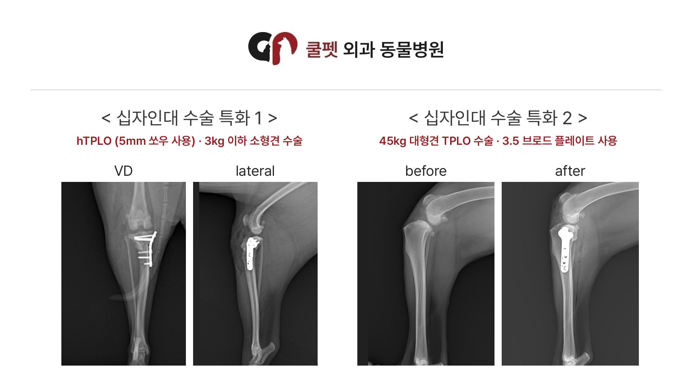

슬개골 탈구 수술
누적 3,000건 이상, 연간 약 300건. 본원에서 슬개골 탈구 수술 후 1년 이내 재발하면 재진단 결과에 따라 추가 비용 없이 재수술해 드립니다. 외부 요인에 의한 재발은 치료비가 발생할 수 있습니다.
일산 킨텍스로 · 정형외과 수술 특화 동물병원
2015년 개원 이래 강아지 슬개골 탈구, 십자인대 파열, 고관절, 골절 수술을 중점적으로 진료해 왔습니다. 정형외과 수술 후 당일 퇴원이 가능합니다.
다른 동물병원에서도 수술을 의뢰하는 정형외과 수술 특화 병원입니다.
누적 3,000건 이상, 연간 약 300건. 본원에서 슬개골 탈구 수술 후 1년 이내 재발하면 재진단 결과에 따라 추가 비용 없이 재수술해 드립니다. 외부 요인에 의한 재발은 치료비가 발생할 수 있습니다.
누적 500건 이상, 연간 약 100건. TPLO는 인공인대를 넣지 않고 경골 고원의 각도(TPA)를 조절해 십자인대 없이도 정상적으로 걸을 수 있게 돕는 수술입니다. 3kg 이하 소형견(hTPLO)부터 45kg 대형견까지 수술합니다.
두 질환이 함께 있는 경우, 아이의 뼈 모양과 상태에 따라 한 번의 수술로 동시에 교정할 수 있는지 상담해 드립니다.
고관절 수술 누적 300건 이상. 골절 수술과 뼈 기형 교정 수술을 진행합니다.
무릎 안에서 정강이뼈가 앞쪽으로 밀리지 않도록 잡아 주는 줄(십자인대)이 닳거나 끊어진 상태를 말합니다.

마취와 수술 중 상태 변화를 바로 확인하고 대응할 수 있도록 갖췄습니다.
사람 대학병원에서 쓰는 호흡마취기입니다. 수술 중과 응급 상황에서 환자 상태를 빠르게 파악하고, 수술 전후 폐 합병증 위험을 줄이는 데 도움이 됩니다.
SpO2·심박 모니터링 장비로 마취 중에도 상태 변화를 바로 확인합니다. 심장 질환이 있는 아이의 수술 마취를 고민하는 보호자분도 상담해 주세요.
골절, 슬개골, 십자인대 수술 중 뼈와 임플란트 위치를 실시간으로 확인하고 조정합니다.
통증 관리와 재활을 위한 물리치료 레이저 장비입니다. 수술 전후 부종 관리와 회복 관리에 사용합니다.
PN(폴리뉴클레오타이드) 성분의 동물용 관절 주사 의료기기입니다. 노령견·노령묘의 관절 불편이나 수술 후 관리가 필요할 때 상담해 주세요.
노현준 대표원장 · 정형외과 수술 전문 수의사
노현준 원장이 직접 연구·집필한 논문이 국제 학술지 Animals(MDPI)에 게재되었습니다. 소형견에게 함께 생길 수 있는 슬개골 탈구와 십자인대 파열을 한 번의 수술로 동시 교정하고, TPLO와 CTWO 수술법의 결과를 비교·분석했습니다.
Comparison of Radiographic Outcomes Between TPLO + TTT and CTWO + TTT in Dogs with Concurrent Cranial Cruciate Ligament Rupture and Medial Patellar Luxation (Hyun-Joon Roh, Jeonghyun Seo, Chun-Sik Bae)
doi.org/10.3390/ani16182912
1년에 한 번, 나이에 맞춘 건강검진을 권합니다. 검진 결과는 2주 안에 메일로 보내 드립니다.
| 프로그램 | 권장 나이 | 강아지 | 고양이 |
|---|---|---|---|
| 기본 | 3살 이하 | 신체검사, 혈청화학검사, CBC, 흉부·복부·관절 X-ray, 심장사상충 검사, 방광 초음파 | 신체검사, 혈청화학검사, CBC, 흉부·복부·관절 X-ray, FSAA 검사, 방광 초음파 |
| SILVER | 5살 이하 | 기본 항목 + 소변검사, 키트검사·염증검사(심장사상충, CRP), 복부 초음파, 항체검사(파보, 홍역) | 기본 항목 + 소변검사, 키트검사·염증검사(pro-BNP), 복부 초음파, 항체검사(범백, 허피스, 칼리시) |
| GOLD | 7살 이상 | SILVER 항목 + 심장사상충·진드기 검사, 심전도, 조기 심장검사, 갑상선 호르몬, 8종 항체, 안압, 눈물량, 조기 신장검사 | SILVER 항목 + 갑상선 호르몬, 혈청화학검사 24종, 심전도, 조기 신장검사(SDMA), 조기 심장검사(pro-BNP), 6종 항체, 안압, 눈물량 |
| SPECIAL | 10살 이상 | GOLD 항목 + 종양검사, 에디슨병 감별, 췌장염 검사 | |
정형외과 수술 후 당일 퇴원이 가능하도록 수술을 진행합니다. 아이가 집에서 편안하게 회복할 수 있도록 돕습니다. 아이 상태에 따라 달라질 수 있으니 진료 시 상담해 주세요.
아이의 뼈 모양과 상태에 따라 한 번의 수술로 동시 교정이 가능한 경우가 있습니다. 동시 수술이 가능한지 진료 후 상담해 드립니다.
3kg 이하 소형견은 5mm 쏘우를 사용하는 hTPLO로, 45kg 대형견은 3.5 브로드 플레이트를 사용한 TPLO로 수술한 사례가 있습니다.
본원에서 슬개골 탈구 수술 후 1년 이내에 재발하면 재진단 결과에 따라 추가 비용 없이 재수술해 드립니다. 외부 요인에 의한 재발은 치료비가 발생할 수 있습니다.
네. 고양이 건강검진 프로그램을 따로 운영하며, 노령묘 관절 관리도 상담해 드립니다.
오후 2시~4시는 수술시간이라 진료가 어려울 수 있습니다. 내원 전에 미리 연락해 주세요.
수술시간(오후 2~4시)에는 진료가 어려울 수 있으니 내원 전에 연락 부탁드립니다.